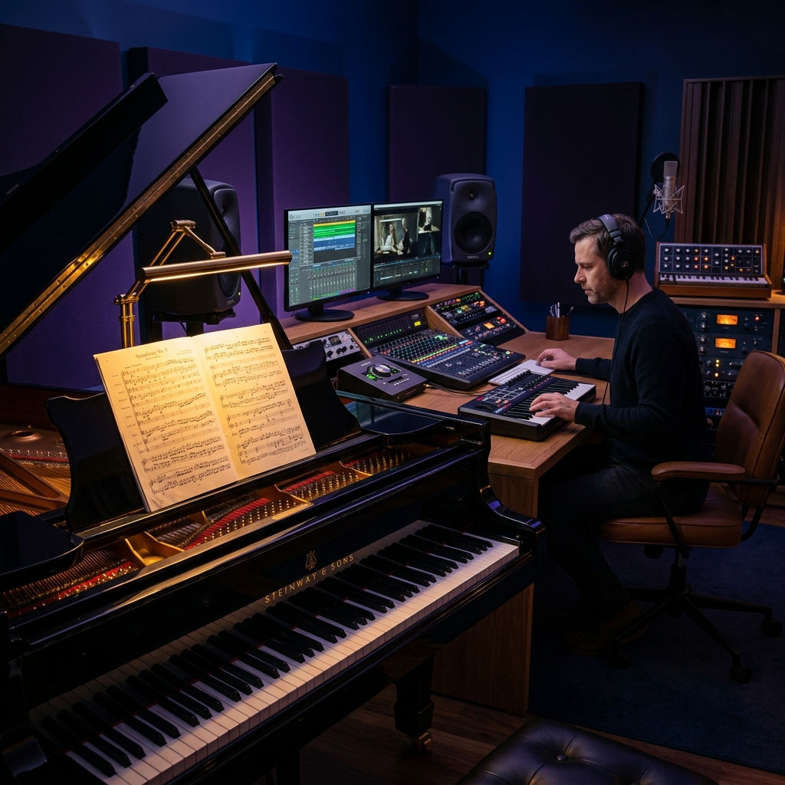

Our Story
Founded by a group of conservatory-trained musicians and tech visionaries, we bridge the gap between creative inspiration and technical realization.
Evolution of Excellence
The Conservatory Spark
Our founder, Julian Vane, starts transcribing complex jazz improvisations for fellow students at the Berklee College of Music.
Digital Expansion
Launch of our first digital platform, connecting independent film composers with professional engravers.
The AI Revolution
Integration of proprietary neural audio analysis, setting new standards for transcription speed and accuracy.
Powering the Workflow
Dorico Pro
Sibelius Ultimate
Pro Tools
Finale 27

Where Magic Happens
Our studio is equipped with the finest hybrid equipment to ensure every MIDI realization sounds like a live orchestra.
The Virtuosos
Julian Vane
Founder & Lead Engraver
Former orchestrator for major gaming studios with a passion for jazz theory.
Elena Rossi
Transcription Specialist
Absolute pitch possessor, specializes in micro-tonal and avant-garde transcription.
Marcus Thorne
MIDI Realization Lead
Expert in VST programming, ensuring your digital scores sound stunningly real.